Guia com o melhor Pal (e alternativas) de cada elemento do jogo, para combate e trabalho de base.
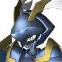
Legendary, ótimos status gerais e habilidade de AoE/stun. Também serve como opção elétrica.
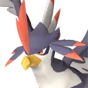
Boa montaria aérea neutra, versátil para exploração e combate leve.
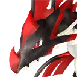
Fogo/Dragão — maior dano bruto do tipo, referência em combate.
Alternativas fortes, boas para trabalho de base (fundição/forja) além de combate.
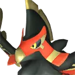
Fogo/Voador — menos dano que o Ignis, mas ótima mobilidade aérea e queimadura sustentada.
O melhor puro-água: aprende Hydro Laser e Dragon Meteor, dois golpes em área com 150 de poder, sem a fraqueza de dragão.
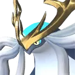
Água/Dragão — dano ainda maior aproveitando vantagem de tipo dragão, mas fica vulnerável a counters de dragão/gelo.
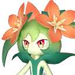
Melhor equilíbrio: ótima utilidade de trabalho (plantio, colheita) com stats de combate razoáveis.
Como montaria usa lançador de granadas; excelente para base (plantio, corte de madeira, transporte, trabalho manual).
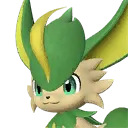
Alternativa defensiva com habilidades de cura.
Status lendários e AoE de stun, topo da categoria.
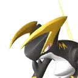
Aprende Kerauno (bom dano em área + voo defensivo), aumenta drops de Pals de água.
Melhor opção acessível para early game.
Domina o tipo, Tier S, status superiores e boa vantagem de tipo.
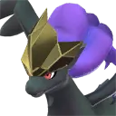
Variante sombria, útil contra inimigos psíquicos.
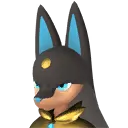
Altamente eficiente: aplica dano de Terra em todos os ataques do jogador, fornece recursos em combate e ajuda em tarefas de base.
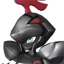
Terra/Sombrio — maior potencial de dano bruto, mas menos utilidade de base que o Anubis.
Sombrio/Dragão — assumiu o topo da categoria, com debuffs fortes e dano sustentado em lutas longas.
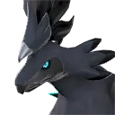
Ainda viável, mas perdeu a posição de melhor do tipo para o Xenolord em atualizações recentes.
Nº1 como montaria: Attack muito alto, excelente para viagem rápida, pode usar lança-foguetes enquanto voa.
Compete de perto com dano sustentado superior, mas é mais lento que o Jetragon para exploração.
| Tipo | Melhor escolha |
|---|---|
| Neutro | Paladius |
| Fogo | Jormuntide Ignis |
| Água | Jormuntide |
| Grama | Lyleen |
| Elétrico | Paladius / Orserk |
| Gelo | Frostallion |
| Terra | Anubis |
| Sombrio | Xenolord |
| Dragão | Jetragon |
Fontes: GameLeap — Best Pals in Every Element · 4netplayers — Best Pals by Element · Palworld Companion — Best Pals by Element · TechTudo — Melhores Pals de cada elemento · CoopGamer — Tier List de Combate